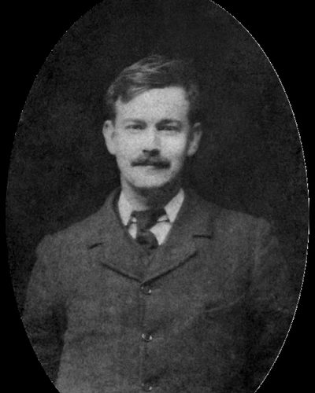

Ideologies / Left
What is Ethical Socialism?
Ethical Socialism is a political ideology in the Left family. Tawney grounded socialism in morality instead of economic laws. A society organised around the right to acquire wealth without limit loses any common purpose, so property and industry should be judged by the function they serve for the community. Equality does not mean treating everyone identically but removing the class privileges that divide people, through shared provision of education and health, progressive taxation and a voice for workers in industry. His argument drew on his Christian belief in the equal worth of every person.
Socialism as a moral case for equality and fellowship.
Defined from: R. H. Tawney, The Acquisitive Society (1920) and Equality (1931)
See how close you are to Ethical Socialism Dare a friend to answer as one


Where Ethical Socialism stands on 13 axes
Each axis runs from 0 to 100. A score of 50 is the middle. On a classic compass it sits in the Libertarian Left quadrant.
| Axis | Position | Score | In words |
|---|---|---|---|
| EconomyMarket to Planned | 60 | Leans Planned | |
| OwnershipPrivate to Collective | 60 | Leans Collective | |
| RightsLiberty to Security | 25 | Strongly Liberty | |
| GovernmentDemocracy to Autocracy | 5 | Very strongly Democracy | |
| StructureDecentralised to Centralised | 50 | Balanced | |
| NationInternationalist to Nationalist | 30 | Strongly Internationalist | |
| ImmigrationMulticulturalist to Assimilationist | 30 | Strongly Multiculturalist | |
| ValuesProgressive to Traditional | 40 | Leans Progressive | |
| TechnologyAccelerationist to Precautionary | 40 | Leans Accelerationist | |
| EnvironmentIndustrialist to Environmentalist | 45 | Balanced | |
| ReligionSecular to Religious | 45 | Balanced | |
| MilitaryPacifist to Militarist | 25 | Strongly Pacifist | |
| TradeFree Trade to Protectionist | 45 | Balanced |
Ideologies closest to Ethical Socialism
- Social Democracy89% alike
- Social Gospel86% alike
- Democratic Socialism85% alike
- Market Socialism84% alike
- Christian Realism84% alike
Its opposite on this map is Juche, at 31%.
Parties near Ethical Socialism
- African National Congress of 1955South Africa. The Freedom Charter (1955)91% alike
- French Popular FrontFrance. Programme of the Rassemblement Populaire (1936)88% alike
- Independent Labour PartyUnited Kingdom. Object and Programme (1893)88% alike
- ChartistsUnited Kingdom. The People's Charter (1838)87% alike
Common questions
What is Ethical Socialism?
Ethical Socialism is a political ideology in the Left family. Tawney grounded socialism in morality instead of economic laws. A society organised around the right to acquire wealth without limit loses any common purpose, so property and industry should be judged by the function they serve for the community. Equality does not mean treating everyone identically but removing the class privileges that divide people, through shared provision of education and health, progressive taxation and a voice for workers in industry. His argument drew on his Christian belief in the equal worth of every person.
What does Ethical Socialism believe?
In one line: Socialism as a moral case for equality and fellowship. Its strongest positions are Democracy, Liberty, Pacifist. Tawney grounded socialism in morality instead of economic laws. A society organised around the right to acquire wealth without limit loses any common purpose, so property and industry should be judged by the function they serve for the community. Equality does not mean treating everyone identically but removing the class privileges that divide people, through shared provision of education and health, progressive taxation and a voice for workers in industry. His argument drew on his Christian belief in the equal worth of every person.
Who founded Ethical Socialism?
Ethical Socialism is defined here from The Acquisitive Society (1920) and Equality (1931) by R. H. Tawney. The thinker most tied to it is R. H. Tawney (1880 to 1962).
Is Ethical Socialism left wing or right wing?
On a classic two axis compass Ethical Socialism falls in the Libertarian Left quadrant, which means the economic left and the libertarian side. Left and right hide a lot, though, which is why EthosScales scores it on thirteen separate axes.
How is Ethical Socialism different from Social Democracy?
They are close, at a 89% match. The biggest gaps are on Religion, where Ethical Socialism scores 45 and Social Democracy scores 20, and Rights, where Ethical Socialism scores 25 and Social Democracy scores 35. On each axis, 0 is one end and 100 is the other.
Think this is wrong? Suggest a correction. The scores are editorial estimates.